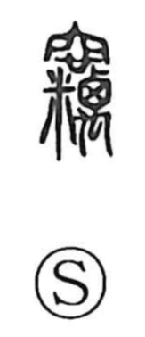

窃

Uncategorized
Kun: nusumu, hisoka, hisoka ni | On: setsu
steal ・ secretly ・ stealthy
Explanation
The original form of 窃 is 竊, a compound that sets 穴, an underground chamber, over 米, grain, together with a component that depicts small insects clustering. It pictures rice stored in a cellar being quietly overrun and eaten by swarming pests—grain that disappears out of sight. From this hidden, unseen consumption arise the senses “in secret” and “to steal.” A related graphic idea appears in 蠹, which shows two insects within a grain sack (橐), emblematic of cereal pests. In this way, 窃 conveys the notion of stealthy taking, like grain vanishing in the dark of a storage pit.